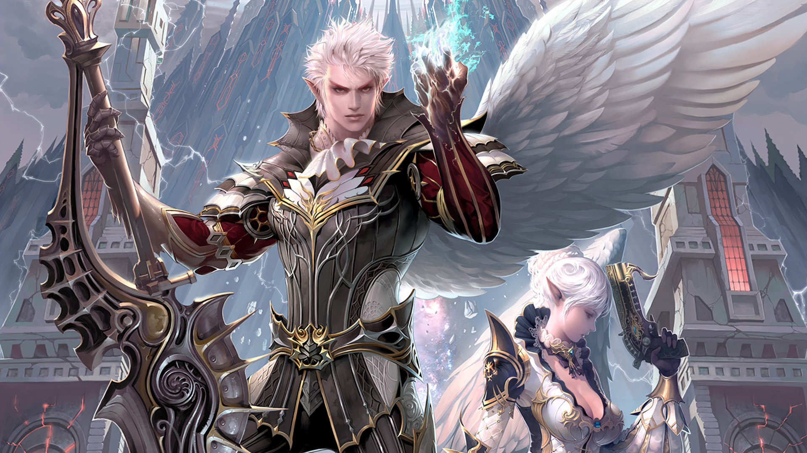
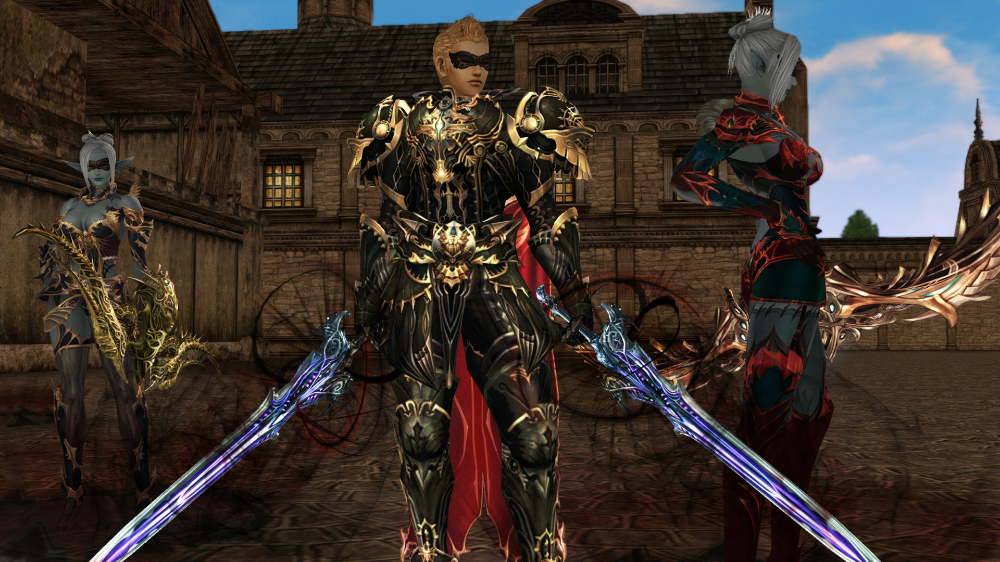
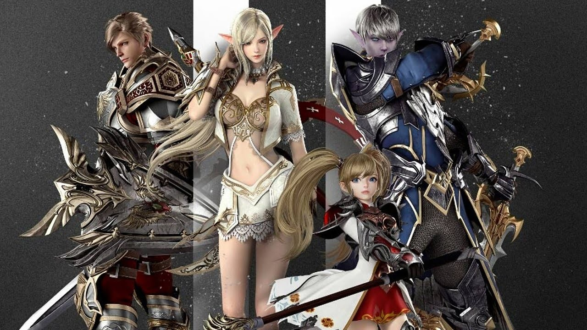
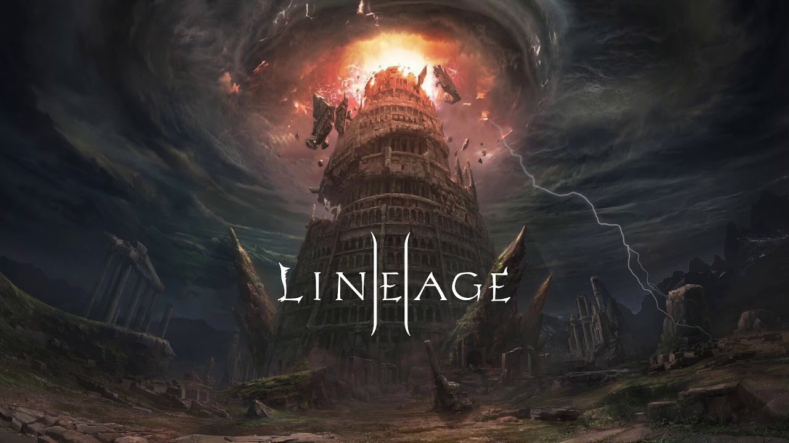

Linegae 2
Lineage II is a massive multiplayer online role-playing game (MMORPG) for Microsoft Windows and the second game in the Lineage series. It is a prequel to Lineage and is set 150 years before the firstgame.[1] It has become popular since its October 1, 2003 launch in South Korea, reporting 1,000,918 unique users during the month of March 2007. To date, the game has been played by more than 14 million users, most of whom are based in Asia. Lineage II adopted a free-to-play model in Lineage II: Goddess of Destruction, with all game content being free except for "purchasable in-game store items and packs" in November 2011. A prequel, Lineage 2: Revolution, was released as a mobile game in 2016.

Gameplay
The first thing a player does when playing Lineage II is to create a character. They can choose their character's race and personalise the character's face and hair. However, the gameplay allows many options for personalisation of the character visuals: for example, the player can choose attributes and traits like a hairstyle, hair colour, facial expression, and gender among other features. Every player has to begin the game in a temple in their character's race's zone (for example: Humans start in "Talking Island" and the Dark Elves in "The Shilen Temple"). Most commonly, the player can choose between a mage and a fighter in each race except Dwarves and Kamael, which can be only fighters.
A major part of Lineage II gameplay is the combat. Monsters can be found outside of Towns on the hunting fields or deep inside underground dungeons. When the player defeats a monster, their character gets XP and SP to help them level up and learn new skills. Players can also fight other players through a PvP system.
If a player's character dies in battle, they are given the option to resurrect in the nearest town or village. They can also wait for another player to resurrect them with a Resurrection scroll or spell. Resurrecting in the nearest town will costs a fraction of the XP gained, which grows exponentially with level. Resurrection spells and elite scrolls generally restore some of the lost experience.
A major part of Lineage II gameplay is the combat. Monsters can be found outside of Towns on the hunting fields or deep inside underground dungeons. When the player defeats a monster, their character gets XP and SP to help them level up and learn new skills. Players can also fight other players through a PvP system.
If a player's character dies in battle, they are given the option to resurrect in the nearest town or village. They can also wait for another player to resurrect them with a Resurrection scroll or spell. Resurrecting in the nearest town will costs a fraction of the XP gained, which grows exponentially with level. Resurrection spells and elite scrolls generally restore some of the lost experience.

Characters
Characters play the role as a player's avatar within the game. Players are allowed to elect up to 7 characters per account. There are currently seven races in the world of Lineage II: the Humans, who are similar to modern-day humans and who have all-around balanced characteristics; the Elves, who have superior dexterity, movement, and casting speed, but weaker offense; Dark Elves, who have higher magic and melee attack capabilities; Orcs, who have higher HP and MP but slower movement; Dwarves, who are powerful melee attackers and master craftsmen; Kamael, who are humanoids with single wings and gender-specific job classes; and Ertheia, female warriors with two completely unique classes, and different quest lines.

Development
Hyeong-Jin Kim, the production team head for Lineage II, came up with the basic concept for the game in early 2000. Development happened in October–November of the same year. Kim and producer James Bae have stated that their reasons for developing a prequel for Lineage rather than a sequel is that "Lineage will continue to be updated as a game", and that "by working on its past, we will not be risking conflict with the direction of updates that Lineage will take in the future".
According to Kim and Bae, the game's initial subtitle, "The Chaotic Chronicle", was developed with the intention to "express the large-scale war, strategies, conflicts, and collaborations that we hope to encourage among players". Lead Game Designer Raoul Kim said that the reason for rendering Lineage II in 3D was "simply because most games today are [also] using 3D graphics", and because they deemed it "more appropriate than 2D for the things that [they] were going to create". Developers chose to use the Unreal Engine 2 game engine because of its ability to render outdoor scenes and its powerful editing features.
According to Game Design team head, Cheol-Woong Hwang, there were different concepts for each of the race's home villages. He described the concept for the human village in Talking Island as "ordinary", while the Elven Village was designed "so as not to lose the natural and royal high-class feeling". They designed the Dark Elven village based on a "grotesque and serious feeling in order to express the rough history of these who had been expelled from the Elves". There are three versions of Lineage II available presently - classic, essence and Fafurion. Where the classic bears the same look and feel of the game as it was decade back, the others have specific functions.
According to Kim and Bae, the game's initial subtitle, "The Chaotic Chronicle", was developed with the intention to "express the large-scale war, strategies, conflicts, and collaborations that we hope to encourage among players". Lead Game Designer Raoul Kim said that the reason for rendering Lineage II in 3D was "simply because most games today are [also] using 3D graphics", and because they deemed it "more appropriate than 2D for the things that [they] were going to create". Developers chose to use the Unreal Engine 2 game engine because of its ability to render outdoor scenes and its powerful editing features.
According to Game Design team head, Cheol-Woong Hwang, there were different concepts for each of the race's home villages. He described the concept for the human village in Talking Island as "ordinary", while the Elven Village was designed "so as not to lose the natural and royal high-class feeling". They designed the Dark Elven village based on a "grotesque and serious feeling in order to express the rough history of these who had been expelled from the Elves". There are three versions of Lineage II available presently - classic, essence and Fafurion. Where the classic bears the same look and feel of the game as it was decade back, the others have specific functions.
Gameplay Trailer